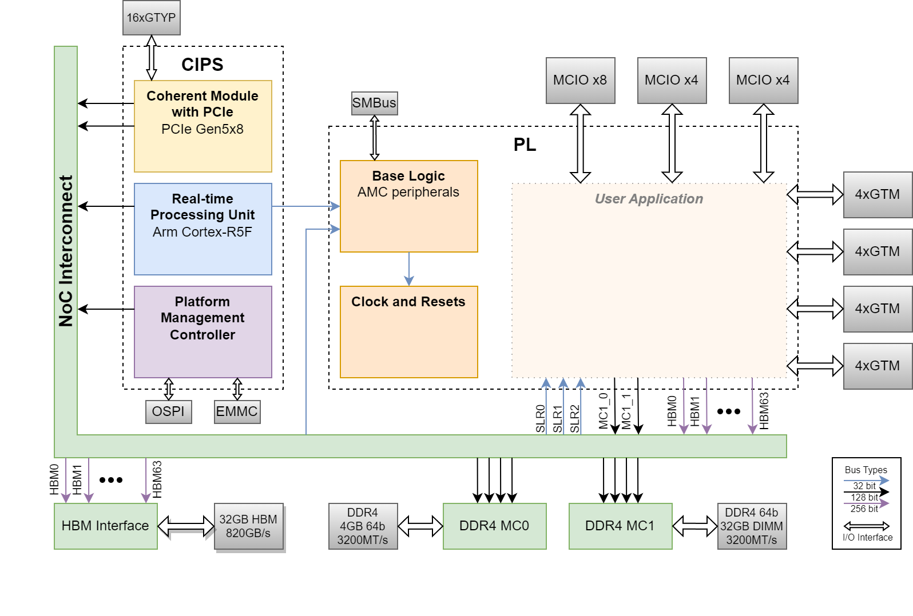

AMR V80 - Hierarchy Overview¶
For common Versal architecture concepts, see Common Hierarchy
This document describes the V80 Board-specific hierarchy and block diagram.
Introduction¶
The V80 design is a PCIe accelerator card implementing a high-performance architecture with CPM5 hardened PCIe Gen5 x8, HBM memory, and extensive NoC connectivity. The design leverages hardened silicon blocks to maximize performance while minimizing programmable logic resource consumption.
Block Diagram¶
The following is the block diagram of the design, highlighting the connectivity for the three blocks in AMR. The User Application block is not part of the AMR design, and serves only to illustrate how a user application could be integrated with AMR to connect directly to MCIO and QSFP interfaces, and connect to the NoC to interface with the PCIe, HBM, and DDR4 blocks. The AMR base design can be extended to include the MCIO and QSFP for the user application by uncommenting the pins from the <>/alveo_v80/platforms/v80_base/scripts/config_bd.tcl and <>/alveo_v80/platforms/v80_base/xdc/impl.pins.xdc. Check more detailed in the hardware design repo https://github.com/Xilinx/amr_vivado_designs

Control, Interfaces and Processing System¶
The Control, interfaces, and processing system (CIPS) IP configures the various hard blocks that are present in the AMD Versal™ device. The AMR design configures the coherent module with PCIe (CPM5) block, the real-time processing unit (RPU) block, and the platform management controller (PMC) block through the CIPS IP. The primary blocks used in this design are summarized in the following table.
| Block | AMR Usage | More information |
|---|---|---|
| Coherent Module with PCIe | The CPM5 block contains the PCIe gen5x8 and QDMA hardened IPs on the device. It interfaces between the PCIe transceivers and the NoC interconnect to allow communication from the PCIe host to the device. It is configured with the minimum necessary to demonstrate functionality of the card. | Introduction to the CPM5 |
| Real-time Processing Unit | The RPU block contains the R5 processor that is used for running the AMC firmware on the device. This is part of the processing system low-power domain (PS LPD). The primary purpose of this block in this design is to handle the board management functions of the card. | Versal TRM - LPD Architecture |
| Platform Management Controller | The PMC block contains a MicroBlaze-based processor subsystem. It is primarily responsible for managing the bootup, configuration, and internal monitoring of the device. It interfaces with the external flash devices to read/write device images for device configuration. This compulsory unit is required for the Versal device to function. | Versal TRM - PMC Architecture |
Programmable Logic (PL)¶
The PL region contains the soft logic IP and I/O connections. It is separated into two main blocks: Base Logic, and Clocks and Resets. It contains I/O connections to the SMBus, MCIOs, and QSFP I/O interfaces. A summary of the function of each block is described in the table below.
Block |
AMR Usage |
More information |
|---|---|---|
Base Logic |
The base logic region contains test and management IP accessible through PCIe Physical Functions:
|
|
Clocks and Resets |
The base design uses CIPS-generated clocks (100 MHz, 33.33 MHz, 250 MHz) and processor system reset blocks for reset synchronization. The PF1 hierarchy contains a proc_sys_reset block for the GPIO test logic. The design supports future expansion with clocking wizards and additional reset synchronizers for user kernels. Note: AMR supports Power-On-Reset to reload designs from flash but does not support hot-reset/PDI reload due to system complexity. |
NoC Interconnect¶
The NoC interconnect facilitates high bandwidth transport between the various CIPS blocks, the PL, and the DDR4 and HBM memories. Through the NOC IP configurator, the HBM and DDR memory controllers are configured and instantiated into the design. The V80 contains 32GB of internal HBM and 4GB DDR4. Additionally, the V80 also includes a 32GB DDR4 DIMM. In the AMR, the 4GB of DDR4 is allocated to the R5 processor and DMA over PCIe. The 32GB HBM and the 32GB of DDR4 is available for the user application.